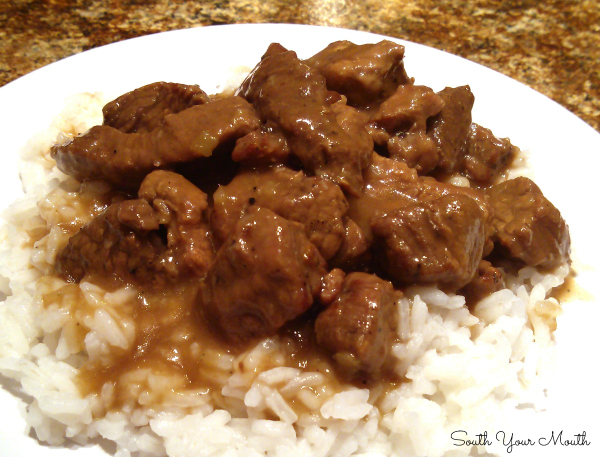

Rice & Gravy

Description
Roast like grandma used to make and easy gravy. This is a recipe my grandmother has made for years. I love the gravy that goes with this! Serve with mashed potatoes and your favorite vegetables!
Ingredients
- 2 tablespoons olive oil
- 1 (3 pound) beef sirloin tip roast
- 1 onion, chopped
- 4 cloves garlic, minced
- 2 cups brewed coffee
- 1 and a half cups water
- 2 cubes beef bouillon
- 6 basil leaves
- 1 tablespoon salt
- 1/2 cup all-purpose flour
- 1/2 cup water
- salt to taste
Steps
- Heat olive oil in stock pot over medium heat; sear roast in the hot oil until slightly browned, about 2 minutes per side. Remove roast from pot and place on a plate. Cook and stir onion and garlic in the hot oil until onion is lightly browned, 10 to 15 minutes.
- Return seared roast to the stock pot; pour coffee and 1 1/2 cup water over roast. Add beef bouillon, basil leaves, 1 tablespoon salt, and pepper.
- Bring broth to a boil; reduce heat to medium low, cover stock pot, and simmer until meat is falling apart, 2 to 3 hours. Remove and discard basil leaves. Transfer roast to a serving dish and cover with a lid or aluminum foil, keeping the broth in the stock pot over medium heat.
- Whisk flour and 1/2 cup water together in a bowl until smooth. Slowly whisk flour mixture into broth until gravy is smooth and somewhat clear; season with salt. Pour about half the gravy over the roast and pour the rest into a gravy boat for serving.